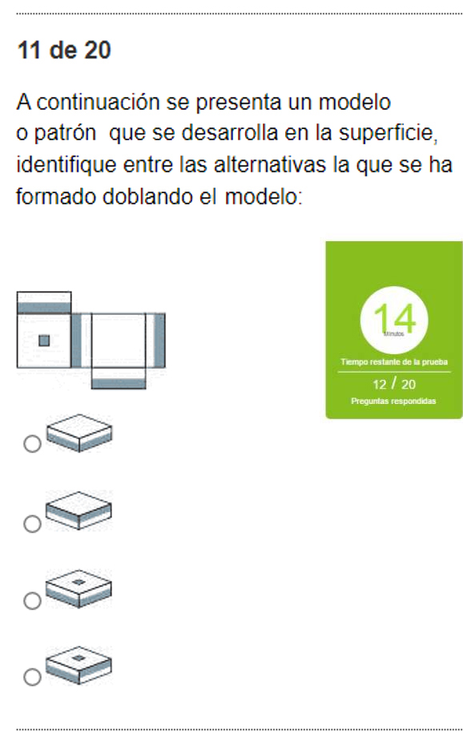
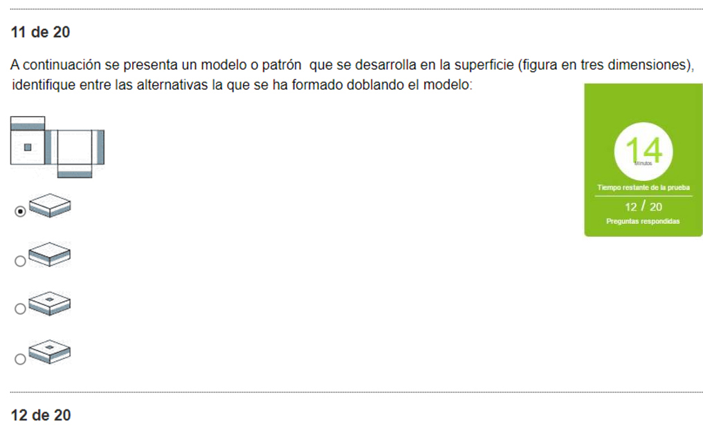
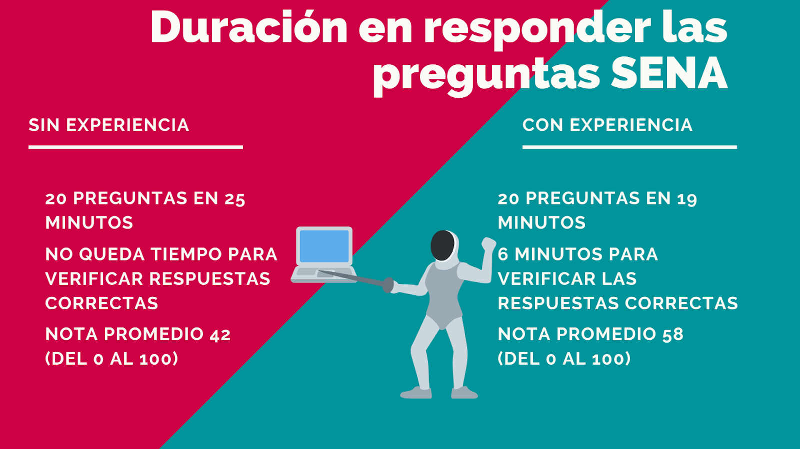
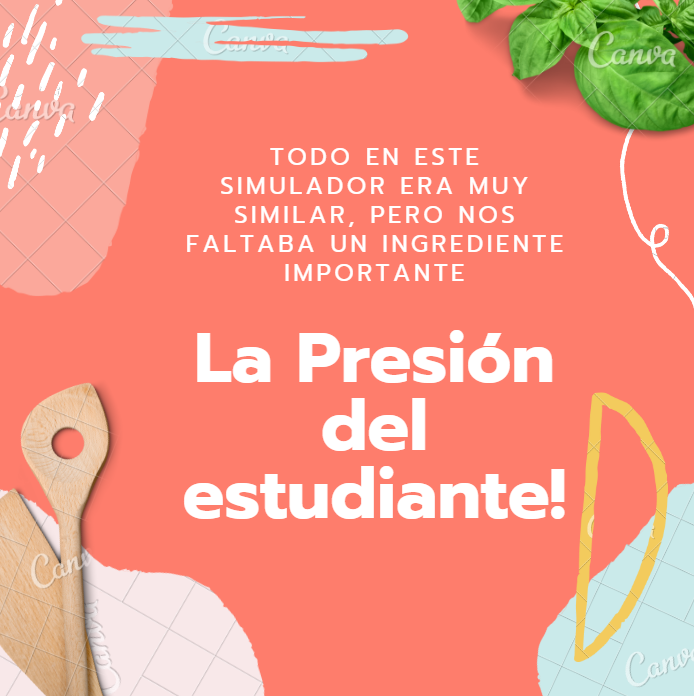

Prepárate nuestro canal de YouTube
Prepárate nuestro canal de YouTube 

Prepárate para la prueba del SENA y consigue mejores resultados
No te equivoques en la prueba real del SENA, solo tienes una sola oportunidad cada 3 meses, no puedes darte el lujo de esperar 6 o 12 meses para empezar a estudiar. Equivócate en un simulacro en el que tu pérdida será muy baja, aprende de tus errores y mejora tus resultados.


Con la ayuda de diferentes profesionales en psicología, administración e ingeniería nos propusimos a realizar el montaje de un simulacro de la prueba del SENA con todos los elementos básicos de la misma, dentro de los cuales se integra la realización de la primera parte (preguntas de la 1 a la 10 múltiples respuestas), la segunda parte (preguntas de la 11 a la 20 única respuesta) limitándose por un contador en reversa de 25 minutos que aumenta la presión del aspirante en la rapidez en las respuestas.

Un estudiante con práctica y experiencia claramente podrá afrontar de una mejor manera el reto de presentar la prueba del SENA real, manteniendo la calma y contestando las preguntas de manera objetiva.

Todos los principios básicos en este simulacro son similares a la prueba virtual del Sena Sofia. Este simulacro cuenta con 21 diferentes pruebas y tiene una duración de 25 minutos al igual que la prueba real del SENA